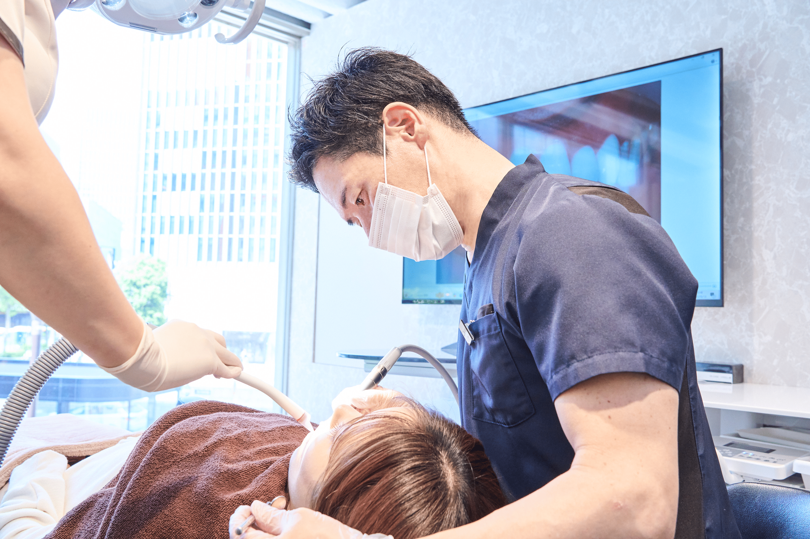
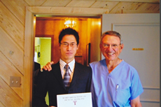

当院が掲載されています。詳しくは画像をクリック
他のメディア掲載はこちら
院長紹介
Doctor
患者様により優れた治療を提案できるクリニックに。
歯科医師・博士（歯学）：阿部 洋太郎

勤務医時代から第一線で審美歯科やインプラント治療を中心に仕事をしてきました。
当院ではラミネートベニアに特化した審美歯科を行っています。
最新の治療が最良の治療とは考えていませんが、患者様により優れた治療を提案できるクリニックでありたいと思います。良い治療を受けたいと考えている方、是非ご相談ください。
略歴
- 日本大学松戸歯学部を卒業後、歯科保存学入局
- 千葉県の歯科医院、都内の歯科医院にて勤務
- 松島歯科・新橋インプラントオフィスにて副院長およびインプラントオフィス所長を兼務
- 日本大学大学院松戸歯学研究科を卒業（インプラントと口腔粘膜病変の研究、コラーゲンとエラスチンの研究、カンジダと癌の研究）
- 審美歯科、ラミネートベニアを専門的に行っており、日本各地や海外からの来院にも対応している
所属学会・認定資格
- 日本口腔インプラント学会インプラント認証医
- International Society of Oral Implantology 国際口腔インプラント学会認定医
- 日本歯科放射線学会
- 歯科エックス線優良医
- 日本顕微鏡歯科学会
- 日本歯科審美学会
- 日本大学松戸歯学部口腔病理学非常勤講師（口腔外科疾患と顕微鏡診断の指導）
- 厚生労働省指定臨床研修医指導資格
- マウスピース矯正 Smile TRU認定
- マウスピース矯正 インビザラインGO認定 "invisalign go 100"
海外での経歴

ボストン ハーバード大学 研修プログラム
アメリカ歯周病学会会長Dr.Nevins 歯周病治療とインプラント治療のAdvanced Program学術認定
受賞歴・学術功績
表彰受賞歴
2007年
Master of Zirconia Ceramics Award
セラミックス治療年度表彰（松島歯科にて）
2009年
Straumann Implant Dedication Award
インプラント治療年度表彰（松島歯科にて）
2014年
invisalign go 100
インビザラインGo 日本100選抜表彰
2022年
invisalign go 100
インビザラインGo 日本100選抜表彰
学術功績／論文発表
2007年
日本口腔インプラント学会誌『Measurements of the Roots of Adjacent Teeth for Implant Therapy in the Mandibular Molar Area』（下顎臼歯部インプラント治療のためのCTの計測研究）
2012年
日本口腔インプラント学会誌『Anatomical Morphometrics of the Molar Area of the Mandible from Dental Cone-Beam CT Images for Implant Treatment』（インプラント治療のためのCTによる顎骨の計測研究）
2013年
日大口腔科学学会誌『A Histopathological Study of Oral Mucosal Epithelium in the Resion of Implant Treatment』（インプラント治療における口腔粘膜の研究）
2014年
日本口腔インプラント学会誌『Measurement of the Positional Relationship between Implant Prosthetic Crown Design and Defective Part of Jawbone with Cone-Beam CT Images』（CTによるインプラント補綴設計と顎骨の計測研究）
2014年
日大口腔科学学会誌『A Histopathological Study of Oral Mucosal Epithelium in the Resion of Implant Treatment』（インプラント治療における口腔粘膜の研究）
学術功績／学会発表
2005年
日本口腔インプラント学会
– CTと手術用ステントを用いた患者に低侵襲のインプラント治療 –
2005年
日本口腔インプラント学会
– 高齢者に早期咬合負荷を与えたインプラント症例 –
2005年
日本口腔インプラント学会
– CTとステントで手術侵襲を最小限にしたインプラント治療 –
2005年
日本口腔インプラント学会
– インプラントのプラークコントロールとメンテナンスについて –
2007年
日本口腔インプラント学会
– 下顎臼歯部インプラント治療のためのCTの計測研究 –
2007年
日本口腔インプラント学会
– インプラントのメンテナンスと長期症例について –
2007年
日本口腔インプラント学会
– インプラント義歯の症例発表 –
2012年
日本口腔インプラント学会
– 口腔粘膜のコラーゲン・エラスチンについて –
2013年
日大口腔科学会
– 口腔粘膜のコラーゲン・エラスチンとインプラント治療について –